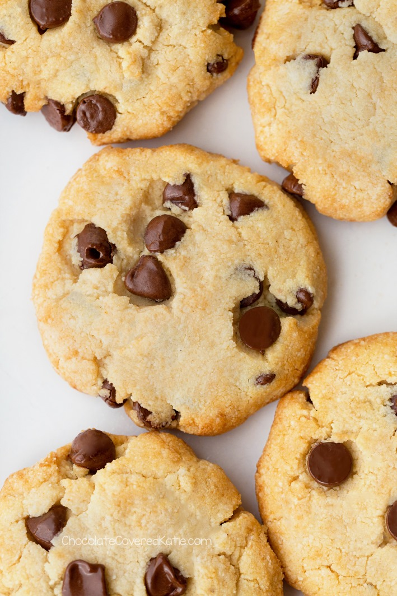

Keto Cookies

There's nothing worse than going into keto and getting the munchies
for some cookies, however there is a solution to this dilemma:
Presenting the Keto Cookies, in this assignment by The Odin Project
i will present a recipe(albeit not one created by me, credits will
be shown below on this page along with the link to recipe itself)
that will allow you to eat cookies and keep those carbs on the low side
Ingredients
- 1 cup finely ground almond flour
- 2-4 table spoons chocolate chips or sugar free chocolate chips
- 2 table spoons powdered sugar or powdered erythritol or stevia
- scant 1/4 table spoon of salt
- 1/8 table spoons of baking soda
- 2 tablespoons of coconut oil
- 1 tablespoon of pure vanilla extract
- 2-3 table spoons of milk
Steps
- Preheat oven to 325 F.
- Stir dry ingredients very well (so you don’t end up biting into a clump of baking soda!).
- Add wet to form a dough.
- Shape into cookies – I used a cookie scoop to first form balls and then shape into cookies.
- Place on a cookie tray, and bake on the center rack 10-12 minutes.
- Let cool an additional 10 minutes before handling, as they are very delicate at first but firm up completely once cool.
Credits
Credit goes to the author of this Keto Cookie recipe at this link